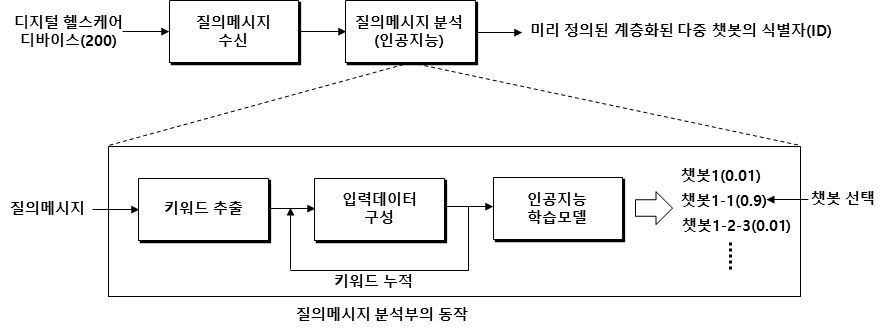
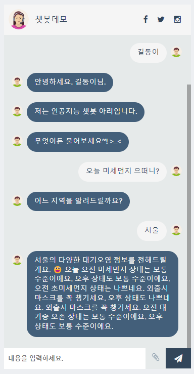

The Empathetic Machine: Designing an Emotion-Aware Healthcare Chatbot
A chatbot that reads the hearts of older adults living alone. A record of raising the 'quality of conversation' through multiple models and emotion recognition.

Why a General-Purpose Chatbot Falls Apart in Front of an Older Adult Living Alone
The project began not with an abstract ‘elderly population’ but with one concrete person: an older adult in their seventies, living alone, far from grown children. Someone who exchanges only a handful of words with another human all day, who always aches somewhere but keeps putting it off, telling themselves it isn’t bad enough for a hospital, and whose spirits sink for no clear reason once night falls. This was the person our chatbot was meant to sit with.
What happens if you simply drop an off-the-shelf conversational AI in front of that person? For the first few days it is a novelty. Then it falls apart. A general-purpose chatbot is optimized to deliver ‘information’: ask a question and it answers, make a request and it handles it. But what the older adult inside that loneliness wanted was not the right answer — it was to be heard. The moment the chatbot responds to “My knee is aching again today” by listing five causes of knee pain, the conversation is over. The person was not there to receive a diagnosis; they were handing a piece of their day to someone.
‘Therapeutic communication’ is a concept long refined in nursing and counseling. Its essence reduces to three things. First, listening — hearing a person out to the end without judging or rushing to fix. Second, a sense of safety — the trust that nothing you say will be met with blame. Third, consistency — remembering yesterday’s conversation and meeting the person from the same place, with the same manner, every time. A general-purpose chatbot fails this older adult not because its performance is poor but because it was designed toward a different goal in the first place. We had to design not a machine that answers, but a machine that stays.
Chapter 2. ArchitectureWhy One Model Wasn’t Enough — the Selective Multi-Model
At first we tried to solve everything with a single, most-powerful generative model. The limits surfaced quickly. Reading emotion with sensitivity, classifying intent precisely, and producing a safe response are three different capabilities, and when one model is made to carry every burden, it does none of them well enough. In the medical and emotional domain especially, the ‘plausible but dangerous answer’ was the greatest enemy.
So the choice we made was a multi-model architecture. When an utterance comes in, a lightweight classifier first judges the situation: is this an emotional outpouring, a symptom complaint, a plain request for information, or a crisis signal? Based on that judgment, the processing is ‘selectively’ routed to the appropriate specialist model. An emotion-recognition model, an intent-classification model, and a response-generation model each stay in their own place and do only their own work. This ‘selective model application’ was the heart of the design.
| Dimension | Single Giant Model | Selective Multi-Model |
|---|---|---|
| Emotional sensitivity | Average, blunt | Precise, via a dedicated emotion model |
| Crisis-signal handling | Buried in generic responses | Instantly branched to a dedicated path |
| Risk of wrong answers | Plausible but dangerous replies | Safeguards applied per path |
| Explainability | Black box | Traceable — which path was taken |
| Maintenance | Full retraining | Module-by-module replacement |

Another virtue of this architecture was explainability. With a single model it is hard to trace why it produced a given answer, but a multi-model system leaves a trail of the decision — “this utterance was branched to the crisis path and was therefore connected to a human.” In a medically adjacent domain, this traceability is not a luxury but a necessity. We filed and registered two patents on this multi-model and hierarchical healthcare-chatbot architecture, and the core of the invention lay not in ‘how to make something smarter’ but in the routing rules that govern what to entrust, when, and to which model.
Chapter 3. Reading the HeartTeaching a Machine to Notice How Someone Feels
Therapeutic communication starts with noticing the other person’s emotional state. So we gathered signals along two tracks: text and sensors. On the text side we placed a classifier that recognizes positive/negative affect and finer-grained emotions in an utterance, and further catches signals of depression. This classifier is BERT-based, trained on text health-counseling data to sort counseling utterances into emotional and risk categories. Part of this work was published in CMES (SCIE).
On the sensor side we analyzed non-verbal patterns such as how often the person spoke, the regularity of sleep and activity, and delays in responding. Depression often surfaces first in the rhythm of speech rather than its content. When an older adult who used to start a conversation every morning has been silent for three days, that is a signal clearer than any sentence. If text reads ‘what is being said,’ the sensors read ‘how the texture of the speech has changed.’

Here, though, we had to be most careful. ‘Detecting a signal’ of depression and ‘diagnosing’ depression are entirely different things. All our system did was catch a risk signal early and — not as a medical judgment — raise attention. No score can hold the whole of a person’s heart, and no model can stand in for clinical care. The classifier’s output had to be not a conclusion but a call signal that summons human involvement.
Chapter 4. Limits and EthicsA Chatbot Is Not a Therapist
Technology that handles mental health carries a heavier responsibility than almost any other field. What we feared most was over-trust. A chatbot that responds warmly every day can feel, to a lonely person, like a real relationship. That may be a small comfort — but if it draws the person away from the professional help they actually need, then we are not helping; we are doing harm.
So we wrote the list of things the chatbot ‘must not do’ before the list of what it could. It does not diagnose. It does not recommend medication. It does not shoulder a crisis alone. It does not let anyone mistake it for a human. And above all, we made the escalation path to a human the most robust part of the system. In the multi-model architecture the crisis path was the simplest and the most certain — so that, whenever things were ambiguous, it always tilted toward calling a person.
Empathy as Engineering
As the project ended, I returned to the first question: can a machine empathize? The honest answer is closer to ‘no.’ A machine does not feel loneliness, and it cannot ache alongside someone else’s grief. What we built was not a ‘machine that feels.’
But if you break empathy down not as a feeling but as an act, the story changes. Listening attentively to the end, responding safely to whatever is said, remembering yesterday and being in the same place again today — these concrete behaviors, the ones that make a person feel ‘empathized with,’ were objects of engineering that could be designed, measured, and improved. What we built was not an empathetic machine but a machine that reliably performs the acts of empathy. And that machine’s most important function was to know its own limits and to call for a human in time.
What that older adult living alone truly needs is still the touch of a human hand. What technology can do is keep them company until that hand arrives and, without missing the moment it is needed, sound the alert — exactly that far and no further. Holding that humble boundary was the deepest engineering this research taught me.
References
- National Research Foundation of Korea (NRF) convergence research project, “An AI-based therapeutic-communication chatbot for the digital healthcare of older single-person households” (collaborative research project).
- D. Park et al., “BERT-based Classification of Text Health-Counseling Data for Emotion and Depression-Signal Recognition,” Computer Modeling in Engineering & Sciences (CMES) (SCIE).
- Multi-model / hierarchical healthcare-chatbot system and selective model-application method, two registered/filed patents (inventor Daeseung Park et al.).
- The user portrayal and dialogue examples in this essay are generalized and reconstructed to explain the design intent; they are not the case of any specific individual. This system only assists professional medical and counseling care and does not replace it.
Read next
 Tech · Issue21
Tech · Issue21Mining, Called Learning: The Generative-AI Copyright and Data-Licensing War
Generative AI was built by swallowing the writing, pictures, and code humanity has piled up over centuries. That swallowing stands behind an old shield called fair use. But in 2025, courts and markets began re-measuring the shield. Lawsuits and a $1.5 billion settlement, licensing deals spreading quietly, "content signals" closing the door on the web, and a technology that asks provenance back — this is a calm map of the war over training data.
 AI · Explainer20
AI · Explainer20It Works in the Demo, Breaks in Production
An AI agent that was faultless in the conference-room demo falls apart the moment you put it on real traffic. The problem is usually not the model's intelligence but its reliability — because succeeding once and succeeding every time are entirely different disciplines of engineering. This piece calmly lays out why agents break, how to evaluate (eval) them, and what guardrails must be in place so that even when they break, they fail safely — all from the standpoint of real deployment.